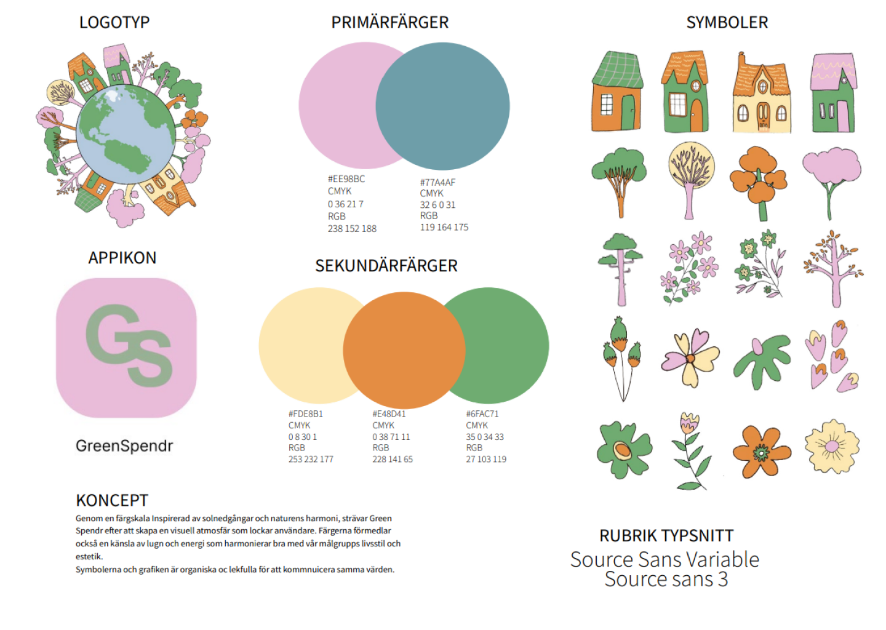
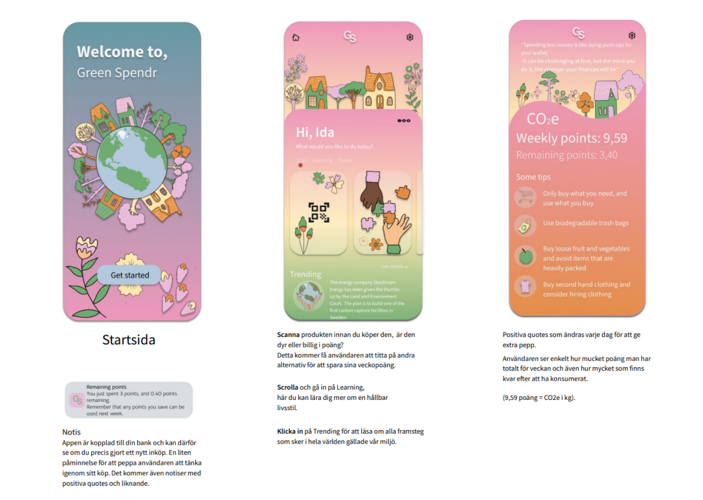
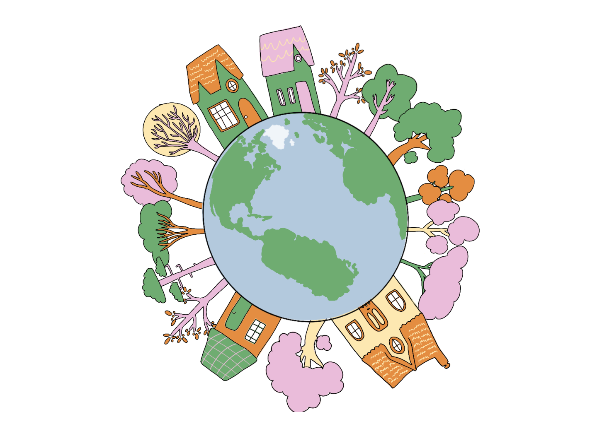
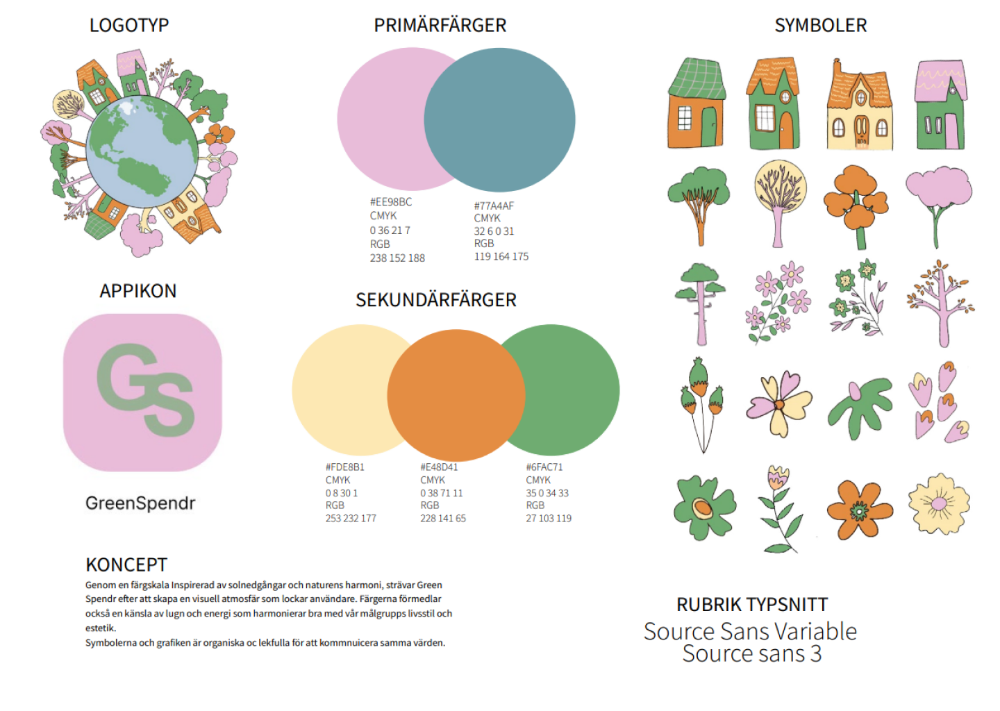
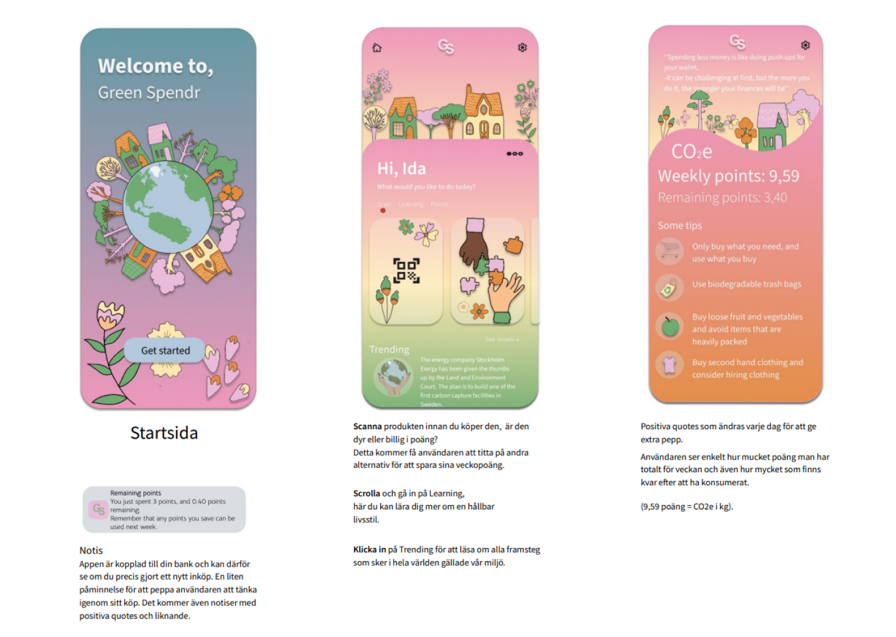
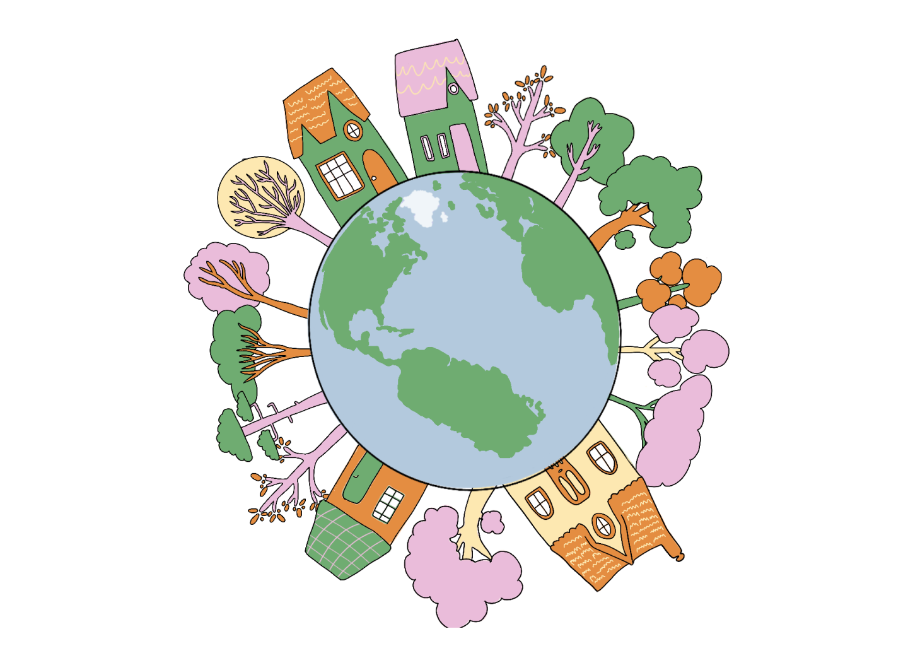

GreenSpendr
 





Green Spendr
According to the Swedish Environmental Protection Agency, each person emits an average of 8 tons of carbon dioxide annually, with a goal to reduce this to 1 ton by 2050.
Green Spendr is an app designed to help users reduce their carbon footprint through mindful consumption. By scanning products, you gain insights into their materials, origin, and environmental impact. The app assigns scores based on your purchases – the lower the score, the better!
Key Features:
- Product Scanning with Climate Data
- Personal Carbon Budget
- Point System and Progress Tracking
Technologies Used:
Adobe Illustrator, Procreate, Figma